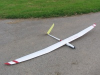
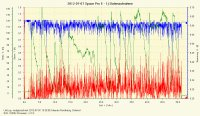

2010, HKM Space Pro, 3.35m wingspan, flaps, with motor and battery 2.6 Kg mass.
The Space Pro, a full GFK/AFK model was taken over by me from a fellow pilot who unfortunately died too early. A fuselage with engine and V-tail, as well as a broomstick fuselage with cross tail were included. Manufacturer of this wonder weapon is HKM Modellbau.
The glider has favorable dimensions due to the three-part wing and is also stored and transported with me with the Staufenbiel model backpack. It is in my eyes even more universal model, like the Cappuccino, because I can cover the first meters of altitude with the engine in weak winds. It can be flown very slowly, as well as very quickly. Due to the low weight, the pull-through is limited, which is understandable. The possibility of ballasting is practically not given here, because there is simply no space for it.
The Space Pro, like most of my models, is equipped with a LiIo receiver power supply. For this it is important to know the current consumption in order to dimension the longitudinal regulator circuit.


As a model powered by an electric motor, you should also know the power requirements of the drive. Since the battery can only be removed with fiddly work, it can practically remain permanently in the model, >17 climb flights should be enough for a day, otherwise it is just sailing off the energy loaded and converted into altitude.


The graphics were created with the free open source program DataExplorer.